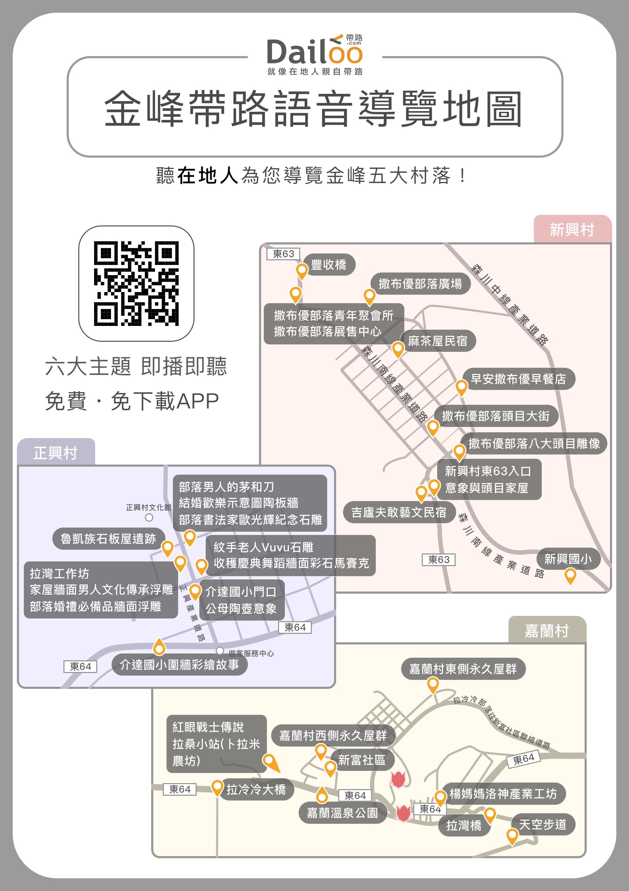
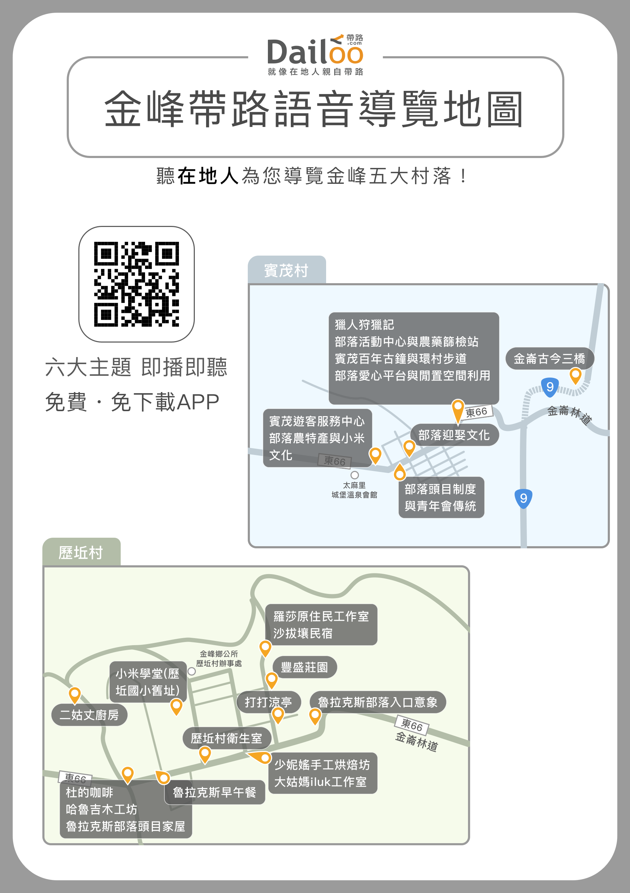

<!DOCTYPE html>
<html lang="zh">
<head>
    <meta charset="UTF-8">
    <title>帶路 - 導覽地圖</title>
    <link rel="stylesheet" href="css/base.css"/>
    <link rel="stylesheet" href="css/navmap.css"/>
</head>
<body>
    <div id="main" class="w">
            </div>
</body>
</html>
<script>
    if(location.hash.substr(1) == '鹿野鄉') {
        document.getElementById("main").innerHTML = ' <a id="vp1" style="width: 144px;top: 312px;left: 572px;" href="/viewpoint.html?utm_source=InSite&utm_campaign=連記茶莊_簡介&id=439dd792-90ec-439b-b2d0-8696337cc102"></a> <a id="vp2" style="width: 212px;top: 381px;left: 697px;" href="/viewpoint.html?utm_source=InSite&utm_campaign=春一枝鹿野76誠信商店_名稱由來&id=ac4eb501-26d9-4a42-80a3-4d19c101e066"></a> <a id="vp3" style="width: 98px;top: 410px;left: 534px;" href="/viewpoint.html?utm_source=InSite&utm_campaign=永安茶園_簡介&id=231f960c-17e9-45d1-882c-73ac16161369"></a> <a id="vp4" style="width: 98px;top: 452px;left: 515px;" href="/viewpoint.html?utm_source=InSite&utm_campaign=厚生茶園_簡介&id=a270bb28-9c18-44bd-94ae-36c0b5696025"></a> <a id="vp5" style="width: 137px;top: 470px;left: 659px;" href="/viewpoint.html?utm_source=InSite&utm_campaign=鹿野遊客中心_簡介&id=b72cf432-6f07-44de-b5c1-3c6f624137c9"></a> <a id="vp6" style="width: 101px;top: 683px;left: 463px;" href="/viewpoint.html?utm_source=InSite&utm_campaign=鹿野高台_鹿野高台概述&id=2bedb382-6491-479f-ad9a-84d9e13e45a6"></a> <a id="vp7" style="width: 211px;top: 729px;left: 287px;" href="/viewpoint.html?utm_source=InSite&utm_campaign=台灣國際熱氣球嘉年華_乘球攻略&id=eb09d210-0928-46de-9702-0c0806200c60"></a> <a id="vp8" style="width: 118px;top: 759px;left: 501px;" href="/viewpoint.html?utm_source=InSite&utm_campaign=高台心樂園_內容介紹&id=3bd2d10c-f123-4138-960b-901a8a33b96b"></a> <a id="vp9" style="width: 98px;top: 798px;left: 485px;" href="/viewpoint.html?utm_source=InSite&utm_campaign=龍谷茶園_簡介&id=e9bef5ed-d70c-41e6-ab6a-82b4c52a66e8"></a> <a id="vp10" style="width: 151px;top: 806px;left: 299px;" href="/viewpoint.html?utm_source=InSite&utm_campaign=福鹿山休閒農莊_簡介&id=936bb8a3-e417-45f8-ba78-02eeff70a8f4"></a> <a id="vp11" style="width: 155px;top: 874px;left: 473px;" href="/viewpoint.html?utm_source=InSite&utm_campaign=鹿野高台飛行傘_翱翔飛行傘&id=59cbc4a3-2dc3-4fce-9c1a-e99c2af86119"></a> <a id="vp12" style="width: 83px;top: 969px;left: 400px;" href="/viewpoint.html?utm_source=InSite&utm_campaign=碧蘿園_曬菁、炒茶&id=e82d0557-50f5-4876-8b36-1f327c53076d"></a> <a id="vp13" style="width: 118px;top: 1015px;left: 836px;" href="/viewpoint.html?utm_source=InSite&utm_campaign=茶葉改良場台東分場_茶葉改良場與鹿野茶&id=4b175ab1-4e54-428d-acda-aa57552c4156"></a> <a id="vp14" style="width: 111px;height: 30px;top: 1113px;left: 415px;" href="/viewpoint.html?utm_source=InSite&utm_campaign=龍田文物館_簡介&id=7d73ea4c-de7b-4386-940e-c930c5b009d1"></a> <a id="vp15" style="width: 101px;top: 1130px;left: 4px;" href="/viewpoint.html?utm_source=InSite&utm_campaign=龍芳茶園_室外日光萎凋場&id=13e1a191-d2d7-4b00-9e97-4b1116ecdea4"></a> <a id="vp16" style="width: 81px;top: 1134px;left: 213px;" href="/viewpoint.html?utm_source=InSite&utm_campaign=博雅齋_簡介&id=96aa93c1-ed51-4e50-aba2-bb10ca89382a"></a> <a id="vp17" style="width: 118px;top: 1148px;left: 336px;" href="/viewpoint.html?utm_source=InSite&utm_campaign=昕新小吃部_簡介&id=8faafbca-031f-4ea6-9ba9-4b99af3be343"></a> <a id="vp18" style="width: 158px;top: 1082px;left: 537px;" href="/viewpoint.html?utm_source=InSite&utm_campaign=龍田國小托兒所_簡介&id=3e7c95bb-43ef-41ff-9c63-35168a102ca3"></a> <a id="vp19" style="width: 81px;top: 1139px;left: 630px;" href="/viewpoint.html?utm_source=InSite&utm_campaign=翠蝶園_簡介&id=c9bcf05e-8ac5-4ac1-ad12-838d94dc677c"></a> <a id="vp20" style="width: 119px;top: 1122px;left: 730px;" href="/viewpoint.html?utm_source=InSite&utm_campaign=紅茶食堂_介紹&id=b0fd08e8-8bfb-435f-b4e1-4c90d6d73f0e"></a> <a id="vp21" style="width: 152px;top: 1158px;left: 766px;" href="/viewpoint.html?utm_source=InSite&utm_campaign=老鄉長日式寓所(邱仁銘宅)_簡介&id=d2711f9a-58d5-4597-bcb9-fee5fdeaaf17"></a> <a id="vp22" style="width: 117px;top: 1222px;left: 195px;" href="/viewpoint.html?utm_source=InSite&utm_campaign=小胭小吃部_簡介&id=2601a7cb-55e6-443e-82e1-cc9161d84457"></a> <a id="vp23" style="width: 117px;top: 1234px;left: 452px;" href="/viewpoint.html?utm_source=InSite&utm_campaign=古早人ㄟ厝_簡介&id=6d71ba1a-43f5-4ca6-926d-a6e8df18af4b"></a> <a id="vp24" style="width: 99px;top: 1201px;left: 580px;" href="/viewpoint.html?utm_source=InSite&utm_campaign=阿度的店_簡介&id=bd17e323-57a9-4966-958e-e3be5e88b6e7"></a> <a id="vp25" style="width: 135px;top: 1240px;left: 570px;" href="/viewpoint.html?utm_source=InSite&utm_campaign=小農田餐酒館_簡介&id=1b0774be-7949-4dfa-b0aa-0280593efedb"></a> <a id="vp26" style="width: 118px;top: 1238px;left: 712px;" href="/viewpoint.html?utm_source=InSite&utm_campaign=阿榮甘仔店_簡介&id=4e13ea34-5a87-4453-9886-d0c084e182f6"></a> <a id="vp27" style="width: 116px;top: 1200px;left: 780px;" href="/viewpoint.html?utm_source=InSite&utm_campaign=鹿野區役場_修繕防潮工事&id=7d61c288-ad1a-41d5-b93a-e5c731a823cf"></a> <a id="vp28" style="width: 111px;height: 25px;top: 1030px;left: 415px;" href="/viewpoint.html?utm_source=InSite&utm_campaign=崑慈堂、鹿野神社_簡介&id=e2a81e68-2784-4638-a152-5c126b945046"></a> <a id="vp29" style="width: 111px;height: 25px;top: 1056px;left: 415px;" href="/viewpoint.html?utm_source=InSite&utm_campaign=崑慈堂、鹿野神社、苦楝樹_概述&id=86ce2b4f-e41b-4dd9-b27f-97176d2abcbc"></a> <a id="vp30" style="width: 111px;height: 25px;top: 1085px;left: 415px;" href="/viewpoint.html?utm_source=InSite&utm_campaign=苦楝樹_簡介&id=cc2132f1-11b6-439a-9204-bbc36df92a0a"></a> <a id="vp31" style="width: 158px;height: 25px;top: 1113px;left: 537px;" href="/viewpoint.html?utm_source=InSite&utm_campaign=米米娜娜小熊燒_簡介&id=5aea810b-9abb-42e9-a63f-5192fe4f1caf"></a> <a id="vp32" style="width: 180px;height: 180px;top: 342px;left: 119px;" href="/themelist.html?id=e3cfc0f0-a9f5-439b-a534-efff46ced2ce"></a> <a id="vp33" style="width: 86px;height: 86px;top: 790px;left: 101px;" href="http://pic.sopili.net/l/facebook/page/175672579574489"></a>';
    }else if(location.hash.substr(1) == '金峰鄉'){
        document.getElementById("main").innerHTML = '  <a id="vp1" style="width: 161px;height: 64px;top: 699px;left: 667px;" href="/viewpoint.html?utm_source=InSite&utm_campaign=新興村東63入口意象與頭目家屋_部落入口意象與家屋特色&id=c210fded-9faf-411d-8628-c557c26766f6"></a> <a id="vp2" style="width: 174px;top: 764px;left: 523px;" href="/viewpoint.html?utm_source=InSite&utm_campaign=吉廬夫敢藝文民宿_家中立柱木雕&id=9fd690e0-c953-4953-abb8-24acfeb4462e"></a> <a id="vp3" style="width: 235px;height: 26px;top: 754px;left: 264px;" href="/viewpoint.html?utm_source=InSite&utm_campaign=正興村陶甕大街_結婚歡樂示意圖(陶板故事牆)&id=5b40b42c-5c5d-4555-b05a-5624c3aeea39"></a> <a id="vp4" style="width: 174px;top: 804px;left: 80px;" href="/viewpoint.html?utm_source=InSite&utm_campaign=魯凱族石板屋遺跡_介紹&id=5bd6f1b5-5c64-4ada-8ff9-30448a5b1b93"></a> <a id="vp5" style="width: 235px;height: 29px;top: 724px;left: 264px;" href="/viewpoint.html?utm_source=InSite&utm_campaign=部落男人的茅和刀_Sinapayan%20男人的茅和刀&id=9d77e03c-609b-469c-8c03-1db18ce38d11"></a> <a id="vp6" style="width: 237px;height: 30px;top: 857px;left: 36px;" href="/viewpoint.html?utm_source=InSite&utm_campaign=拉灣工作坊_陶甕的故鄉拉灣工作坊&id=1b3be260-3dd7-4039-b9ba-27bf34bfb766"></a> <a id="vp7" style="width: 131px;height: 32px;top: 884px;left: 304px;" href="/viewpoint.html?utm_source=InSite&utm_campaign=介達國民小學_介達國小門口公母陶壺意象&id=bb57aa89-038d-4449-9221-07a2338cff93"></a> <a id="vp8" style="width: 101px;top: 1240px;left: 779px;" href="/viewpoint.html?utm_source=InSite&utm_campaign=天空步道_天空步道介紹&id=58be3829-ea94-4902-ab2d-1166452c37ea"></a> <a id="vp9" style="width: 118px;top: 1187px;left: 332px;" href="/viewpoint.html?utm_source=InSite&utm_campaign=拉冷冷大橋_拉冷冷大橋簡述&id=f3d09254-43c1-4ed7-9c75-7477ecd2fdbd"></a> <a id="vp10" style="width: 137px;top: 1222px;left: 455px;" href="/viewpoint.html?utm_source=InSite&utm_campaign=嘉蘭溫泉公園_嘉蘭溫泉公園與溫泉會館&id=ea6ca3bd-57d7-4ce1-aa30-32af1cf7d3e7"></a> <a id="vp11" style="width: 190px;top: 1193px;left: 674px;" href="/viewpoint.html?utm_source=InSite&utm_campaign=楊媽媽洛神產業工坊_洛神花採集體驗介紹&id=aabc17dd-ec56-4b25-9260-8bbea21e96aa"></a> <a id="vp12" style="width: 167px;height: 32px;top: 1980px;left: 401px;" href="/viewpoint.html?utm_source=InSite&utm_campaign=遊客服務中心賓茂服務站_Patagilj%20峰忠傳奇介紹&id=cbeba02c-54ba-457d-b387-37bc09e9cc70"></a> <a id="vp13" style="width: 132px;height: 63px;top: 2084px;left: 607px;" href="/viewpoint.html?utm_source=InSite&utm_campaign=部落頭目制度與青年會傳統_頭目照護制度&id=909d16e7-3665-4b8a-8857-f4e070fc45af"></a> <a id="vp14" style="width: 138px;top: 2003px;left: 624px;" href="/viewpoint.html?utm_source=InSite&utm_campaign=部落迎娶文化_迎娶文化與百合花壁畫&id=25cf9184-d7dc-4e36-8a54-862a226ddaad"></a> <a id="vp15" style="width: 166px;height: 59px;top: 2012px;left: 401px;" href="/viewpoint.html?utm_source=InSite&utm_campaign=部落農特產與小米文化_小米文化趣談&id=9ebf4a54-02b5-4bd2-a6cf-0f85e7000e00"></a> <a id="vp16" style="width: 262px;height: 56px;top: 1918px;left: 500px;" href="/viewpoint.html?utm_source=InSite&utm_campaign=部落愛心平台與閒置空間利用_老地方換菜平台(枝成便利商店)&id=eadafec6-17bd-432a-9a7c-cc1b398be895"></a> <a id="vp17" style="width: 262px;height: 31px;top: 1834px;left: 500px;" href="/viewpoint.html?utm_source=InSite&utm_campaign=獵人狩獵記_排灣族獵人狩獵故事&id=6cd0efb3-632c-45f2-8f10-10d77cb5275b"></a> <a id="vp18" style="width: 262px;height: 26px;top: 1865px;left: 500px;" href="/viewpoint.html?utm_source=InSite&utm_campaign=部落活動中心與農藥篩檢站_部落聚會所(風雨廣場、巴拉貫)&id=a11757f1-5299-486b-b9b7-7ef1d85bd259"></a> <a id="vp19" style="width: 262px;height: 27px;top: 1891px;left: 500px;" href="/viewpoint.html?utm_source=InSite&utm_campaign=賓茂百年古鐘與環村步道_百年古鐘與傳統圖騰神話故事&id=c6de3c27-2bd2-4e18-b6f8-c919304de6bf"></a> <a id="vp20" style="width: 137px;top: 1887px;left: 770px;" href="/viewpoint.html?utm_source=InSite&utm_campaign=金崙古今三橋_金崙舊橋與金崙大橋&id=7f8fd633-c6fc-4d57-8730-4d4ea6ba890b"></a> <a id="vp21" style="width: 210px;top: 2409px;left: 471px;" href="/viewpoint.html?utm_source=InSite&utm_campaign=魯拉克斯部落入口意象_迎賓彩繪牆意涵解說&id=0736409e-2b6a-45e4-a9fa-8d3a57b90b03"></a> <a id="vp22" style="width: 168px;height: 32px;top: 2503px;left: 408px;" href="/viewpoint.html?utm_source=InSite&utm_campaign=少妮媱手工烘焙坊_少妮媱手工烘焙坊介紹&id=32382e94-820f-4d1c-a53f-538a02458732"></a> <a id="vp23" style="width: 118px;height: 63px;top: 2365px;left: 167px;" href="/viewpoint.html?utm_source=InSite&utm_campaign=小米學堂(歷坵國小舊址)_歷坵國小現況概述&id=a4859797-bd07-4dfc-a239-a3302440c620"></a>';

    }
</script>